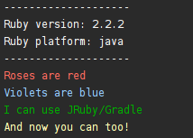
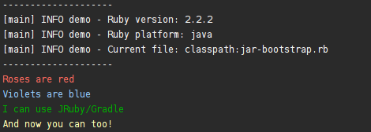

JRuby/Gradle
JRuby/Gradle is a collection of Gradle plugins which make it easy to build, test, manage and package Ruby applications. By combining the portability of JRuby with Gradle’s excellent task and dependency management, JRuby/Gradle provides high quality build tooling for Ruby and Java developers alike.
Plugins available:
Quick Start
Running some Ruby
The simplest example is a hello-world from Gradle, using JRuby/Gradle we can execute a Ruby script, which has Ruby-based dependencies:
build.gradle
apply plugin: "com.github.jruby-gradle.base"
import com.github.jrubygradle.JRubyExec
dependencies {
/* Using the built-in `jrubyExec` configuration to describe the
* dependencies our JRubyExec-based tasks will need
*/
jrubyExec "rubygems:colorize:0.7.7+"
}
task printSomePrettyOutputPlease(type: JRubyExec) {
description "Execute our nice local print-script.rb"
script "${projectDir}/print-script.rb"
}print-script.rb
require 'colorize'
puts "-" * 20
puts "Ruby version: #{RUBY_VERSION}"
puts "Ruby platform: #{RUBY_PLATFORM}"
puts "-" * 20
puts "Roses are red".red
puts "Violets are blue".blue
puts "I can use JRuby/Gradle".green
puts "And now you can too!".yellowExecuting ./gradlew printSomePrettyOutputPlease results in the following:

Packaging some Ruby
build.gradle
apply plugin: "com.github.jruby-gradle.jar"
dependencies {
/* Using the built-in `jrubyJar` configuration to describe the
* dependencies our jrubyJar task will need, so the gem is properly
* included in the resulting .jar file
*/
jrubyJar "rubygems:colorize:0.7.7+"
}
jrubyJar {
/* We want to use this Ruby script as our start point when the jar executes
*/
initScript "${projectDir}/entrypoint.rb"
}entrypoint.rb
require 'colorize'
puts "-" * 20
puts "Ruby version: #{RUBY_VERSION}"
puts "Ruby platform: #{RUBY_PLATFORM}"
puts "Current file: #{__FILE__}"
puts "-" * 20
puts "Roses are red".red
puts "Violets are blue".blue
puts "I can use JRuby/Gradle".green
puts "And now you can too!".yellow.
Executing ./gradlew jrubyJar will build a .jar file inside of the
build/libs directory which can then be invoked:
% java -jar build/libs/self-executing-jar-jruby.jar
